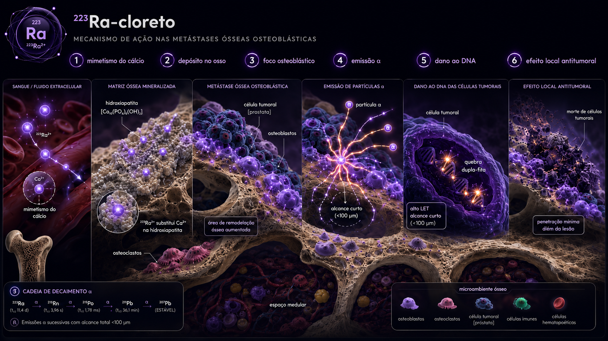

01 Cronologia
De Marie Curie ao ALSYMPCA: 115 anos entre a descoberta do rádio e a primeira aprovação de alfa-emissor para câncer.
Descoberta do rádio
Marie e Pierre Curie isolam o rádio do uraninita, em Paris. Décadas depois, isótopos do rádio (226Ra) seriam usados em terapias diversas — incluindo pacientes que desenvolveriam osteossarcomas pelas longas meias-vidas.
Hipótese 223Ra
Larsen e colaboradores na Noruega propõem o 223Ra como alternativa ao 226Ra: meia-vida curta (11,4 d) reduz dose comprometida em órgãos não-alvo, e a cadeia de decaimento gera 4 emissões alfa concentradas em sítios osteoblásticos.
Primeiro estudo clínico
Nilsson e cols. publicam dados de fase 1: pacientes com mCRPC e metástases ósseas, dose-escalada, mostrando segurança e atividade promissora em alívio de dor e marcadores ósseos.
ALSYMPCA (NEJM) e aprovação FDA
Parker e cols. publicam o estudo fase 3: 921 pacientes com mCRPC, metástases ósseas sintomáticas, sem visceral. OS 14,9 vs 11,3 m (HR 0,70). Aprovação FDA em maio de 2013 — primeiro alfa-emissor em oncologia.
ERA-223 e o sinal de fraturas
ERA-223 (Ra + abiraterona vs abiraterona) é interrompido precocemente por aumento de fraturas (29 vs 11%) e mortes. Mudança de bula passou a exigir agente protetor ósseo (denosumabe ou ác. zoledrônico) em qualquer combinação.
PEACE-3 (Lancet)
Saad e cols.: Ra-223 + enzalutamida + protetor ósseo vs enzalutamida + protetor. rPFS 19,5 vs 16,4 m (HR 0,69), OS positiva. Reabilita combinações com ARPi se houver proteção óssea adequada.
COMRADE, AlphaBet, sequenciamento
COMRADE: Ra + olaparib em HRR-mutados. AlphaBet: Ra-223 → Lu-PSMA sequencial. Estudos de retreatment definindo papel em pacientes com bom desempenho após 6 ciclos.
02 Mecanismo molecular
O rádio é quimicamente análogo ao cálcio: ambos cátions divalentes do grupo II. Em sítios de remodelação óssea aumentada — característica das metástases osteoblásticas — o rádio é incorporado como o cálcio na hidroxiapatita.

Mimetismo do cálcio
O 223Ra2⁺ se comporta como um cátion cálcio-mimético, circulando no plasma e sendo direcionado para áreas de maior atividade osteoblástica e remodelação óssea.
Depósito no osso
Por sua semelhança química com o cálcio, o 223Ra2⁺ se incorpora preferencialmente à matriz óssea mineralizada, especialmente junto aos cristais de hidroxiapatita.
Concentração no foco osteoblástico
Nas metástases ósseas osteoblásticas, há aumento da formação e remodelação óssea. Esse microambiente favorece maior deposição local do 223Ra, concentrando o radiofármaco próximo às células tumorais.
Emissão α de alto LET
O 223Ra e seus descendentes emitem partículas alfa de alto LET, com grande capacidade de depositar energia em trajetos muito curtos, geralmente inferiores a 100 μm.
Dano ao DNA tumoral
A radiação alfa induz dano intenso e localizado nas células tumorais adjacentes, principalmente por quebras de dupla fita do DNA, superando parcialmente mecanismos de reparo celular.
Efeito local antitumoral
O resultado é morte tumoral focal no microambiente da metástase óssea, com penetração mínima além da lesão e menor irradiação dos tecidos vizinhos quando comparada a emissores de maior alcance.
O alcance das partículas alfa em tecido (50-100 μm) é da ordem de poucas células. As trabéculas ósseas tipicamente têm 100-200 μm de espessura, e a medula vermelha hematopoiética está localizada a distâncias maiores. Resultado: o dano alfa concentra-se nas células tumorais aderidas à superfície óssea, com poupança relativa da medula. Daí o perfil hematológico mais favorável que da maioria dos β⁻ ósseos (Sm-153, Sr-89).
03 Esquema terapêutico
Dose ajustada por peso, intervalo de 4 semanas, 6 ciclos. Sem necessidade de hospitalização — pacientes vão para casa após a injeção. Excreção fecal demanda algumas precauções domésticas.
Ciclos planejados
04 Seleção de pacientes
Ra-223 trata exclusivamente o compartimento ósseo. Doença visceral significativa contra-indica formalmente o tratamento.
Inclusão (perfil ALSYMPCA / PEACE-3)
- mCRPC com pelo menos 2 metástases ósseas em cintilografia
- Doença sintomática (dor moderada-severa ou uso de analgésicos)
- Pós-docetaxel ou inelegível para taxano
- ECOG 0-2, expectativa de vida > 6 meses
- Função medular adequada: Hb ≥ 10, plaquetas ≥ 100, neutrófilos ≥ 1.500
Exclusão (contraindicações)
- Metástases viscerais (fígado, pulmão, SNC)
- Linfonodos > 3 cm em eixo curto (peri-aórticos / pélvicos)
- Doença óssea predominantemente lítica
- Compressão medular iminente (RT prévia indicada)
- Combinação com abiraterona sem agente protetor ósseo (após ERA-223)
- Função medular comprometida significativa
A indicação clássica de Ra-223 vinha da cintilografia óssea com 99ᵐTc-MDP (ALSYMPCA). Hoje, com a difusão do PSMA-PET, é comum diagnosticar metástases viscerais ou linfonodais antes invisíveis. Isso impacta a elegibilidade: pacientes "bone-only" na cintilografia mas com captação visceral no PSMA-PET podem não ser candidatos a Ra-223 e devem ser considerados para Lu-PSMA. O PEACE-3 permitiu doença linfonodal < 3 cm desde que sem visceral.
05 Ensaios pivotais
ALSYMPCA estabelece. ERA-223 alerta. PEACE-3 reabilita combinações. COMRADE e AlphaBet apontam o futuro.
mCRPC bone-mets sintomático · n=921 · vs placebo + best supportive care
Aprovação FDA. Primeiro alfa-emissor em oncologia com ganho de OS.
mCRPC + abiraterona vs abiraterona · n=806 · interrompido precocemente
Sinal de fratura inesperado. Mudança de bula: protetor ósseo mandatório em combinações.
mCRPC + enzalutamida + protetor vs enzalutamida + protetor · n=446
Reabilita Ra-223 + ARPi. Combinação segura quando há proteção óssea.
mCRPC HRR-mutado · n=200 · Ra-223 + olaparib vs Ra-223
Sinergia teórica entre dano de DNA por α e bloqueio de reparo (PARPi).
mCRPC sequencial · Ra-223 → Lu-PSMA-617
Combinação alfa-óssea + beta-sistêmico. Conceito 'osso-mais-tudo'.
mCRPC · Ra-223 + docetaxel · n=70 · fase 2
Combinação sequencial com docetaxel. Sinal positivo, aguarda fase 3.
06 Dosimetria
Concentração extrema em superfícies ósseas (sítios osteoblásticos), poupança relativa de medula. Excreção fecal explica a pequena dose colônica.
| Órgão / tecido | Dose por MBq (Gy/MBq) | Visualização | Observação |
|---|---|---|---|
| Superfícies ósseas | ~ 11,0 | Sítio terapêutico — meta da terapia | |
| Cólon (porção inferior) | ~ 0,018 | Excreção fecal | |
| Cólon (porção superior) | ~ 0,012 | Trânsito fecal | |
| Medula óssea | ~ 0,18 | Modesta — alfa não atinge médula central | |
| Fígado | ~ 0,002 | Captação mínima | |
| Rim | ~ 0,002 | Excreção urinária mínima (<2%) | |
| Outros tecidos | < 0,001 | Distribuição limitada |
Difícil de estimar diretamente porque 223Ra não emite γ úteis para SPECT. Estimativas indiretas com 99ᵐTc-MDP em paralelo sugerem doses tumorais >100 Gy (BED) por curso de 6 ciclos em metástases osteoblásticas ávidas. A heterogeneidade explica boa parte da variação de resposta entre pacientes.
07 Eventos adversos · perfil ALSYMPCA
Toxicidade hematológica modesta. Excreção fecal explica os sintomas gastrointestinais. Sem xerostomia (alvo é osso, não glândula).
Pain flare ocorre nos primeiros 7-14 dias do primeiro ciclo, devido à reação inflamatória peri-lesional. Manejo com analgésicos comuns; raramente é dose-limitante. Hemograma seriado antes de cada ciclo é mandatório — adiar até recuperação se Hb < 9, plaquetas < 75 mil ou neutrófilos < 1.000. Fraturas: 5% no ALSYMPCA, mas até 29% no ERA-223 (em combinação com abiraterona sem protetor). Prevenção com denosumabe ou bisfosfonato é hoje padrão em qualquer combinação.
08 Perspectivas
A frente Ra-223 caminha em três direções: combinações racionais (ARPi + protetor ósseo), sinergia com inibidores de reparo de DNA (PARPi) e sequenciamento estratégico com Lu-PSMA.
Em pacientes com mCRPC bone-only sintomático, comorbidades múltiplas e contraindicação a quimioterapia, Ra-223 mantém papel único: ganho de OS, perfil de toxicidade favorável (sem alopecia, sem mucosite, sem nefrotoxicidade), administração ambulatorial sem hospitalização. É a primeira escolha em pacientes idosos frágeis com doença bone-only. A ascensão do Lu-PSMA não eliminou o Ra-223 — ambos cobrem nichos clínicos diferentes.